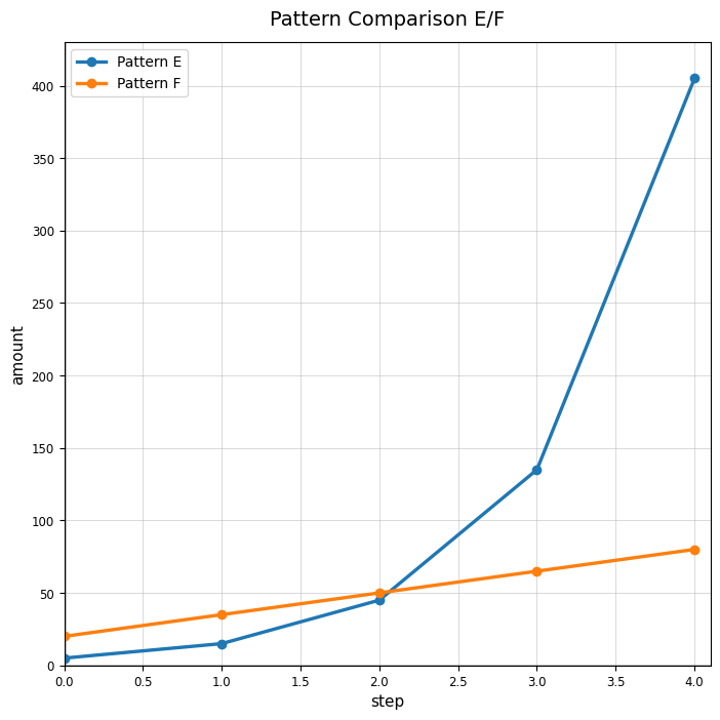
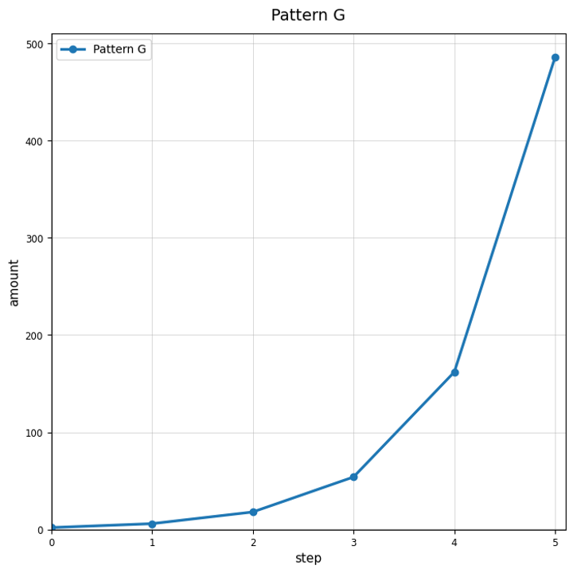

Classify the pattern as linear, exponential, or neither.
| Step | 0 | 1 | 2 | 3 |
|---|---|---|---|---|
| Amount | 7 | 14 | 28 | 56 |
Classify the pattern as growth or decay.
| Step | 0 | 1 | 2 | 3 |
|---|---|---|---|---|
| Amount | 200 | 100 | 50 | 25 |
Identify the common multiplier and use it to find the next two values: $6, 18, 54, 162, \ldots$
Use Pattern Comparison E/F. Which pattern appears exponential? Justify using multiplicative or additive change.

Complete the table for a population that starts at $12$ and is multiplied by $1.5$ each step.
| Step | 0 | 1 | 2 | 3 | 4 |
|---|---|---|---|---|---|
| Population | 12 |
Explain why repeated multiplication is stronger evidence of exponential behavior than simply "getting bigger."
Use Pattern G. Describe at least two pieces of evidence that the relationship is exponential growth.

Create one exponential growth table and one non-exponential table. Explain how to tell the difference.